RTR: Imperium Surrectum
RTR: Imperium SurrectumBithynia, Cappadocia and Media Atropatene
2022-09-12 · Rex Basiliscus
Hello, everyone!
It’s time for another dev diary, and this time we’ll be focusing on the new eastern factions that are being added in 050. They will come without new units for now but will offer a new campaign challenge in Anatolian and Armenian regions. So without further ado, here are the factions of Bithynia, Cappadocia and Media Atropatene!
BITHYNIA
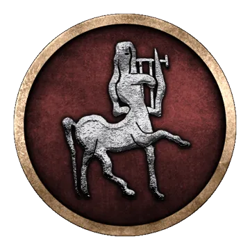
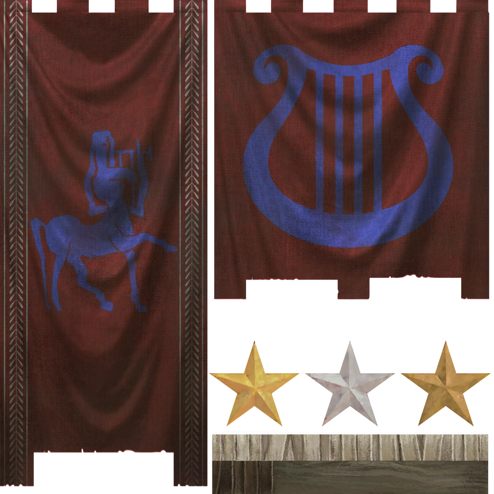
The kingdom of Bithynia is a relative newcomer among the Anatolian powers. The region itself was rather ignored by the Hellenistic monarchs, who were dealt defeats in trying to bring it to heel. Bas managed to defeat the first general sent by Alexander, then Zipoetes resisted the attempts of Antigonos and Lysimachos, and now it is the turn of Nikomedes to face Antiochos and the might of the Seleucid Empire. He is not alone though – in a first for a barbarian chieftain, he managed to make alliances with and recognitions of his rule by the neighbouring Greek cities like Heraclea. The Northern League, led by the Bithynian king himself, thus stands in opposition to the Seleucid monarch.
As a player, you will find your starting position rather difficult. Yours is a small kingdom facing the largest one in the game. Your economy is small, like your army. This means that the Bithynian campaign will probably be one of the more difficult ones!
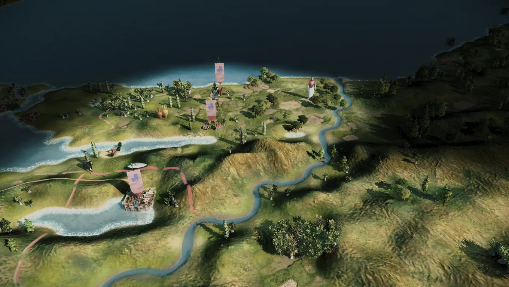
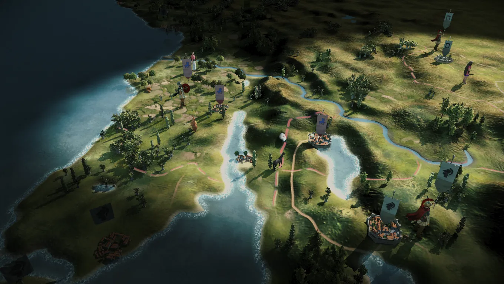
On to the next one:
CAPPADOCIA
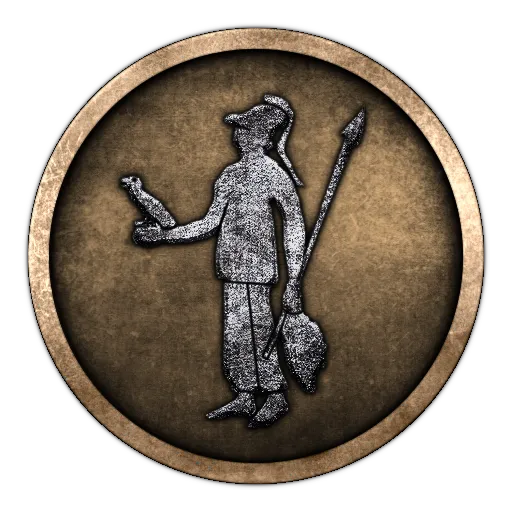
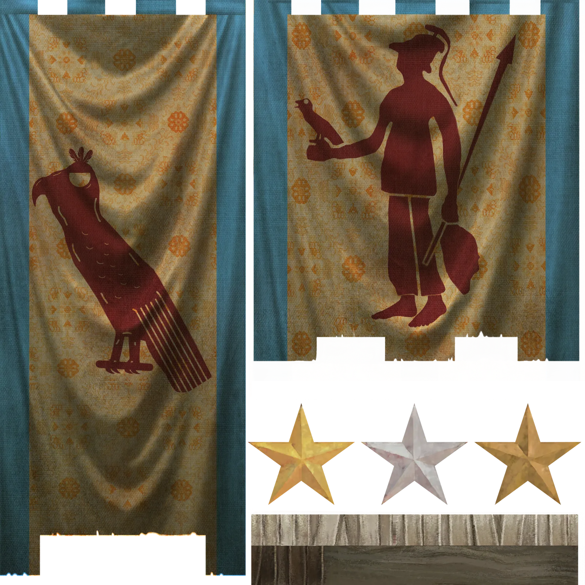
After the crucifixion of the old king Ariarathes in 322 by Perdiccas, Cappadocia was reorganized into two provinces by Eumenes: Cappadocia proper and Pontus. About 20 years later, his son or nephew Ariarathes with the help of Armenians (and possibly Seleucus) retook the southern part of the ancestral home from the Antigonid satrap Amyntas and established himself as a dynast. And truly, Cappadocia remained an Iranian principality, continuing to stamp money with Aramaic legends and being left untouched by the Greeks. At least until now …
At the start of the campaign, Ariaramnes is lord of Cappadocia. Historically, it was in his reign that friendly relations with the Seleucids were established and even the introduction of Greek on his coins first appeared. The faction is not a small one – you own a large part of eastern Anatolia, bordering the Galatians, Mithridatic Pontus, Armenia and the vast Seleucid Empire. There are good options for expansion, but sooner or later, you will have to clash with your neighbours for supremacy (or survival).
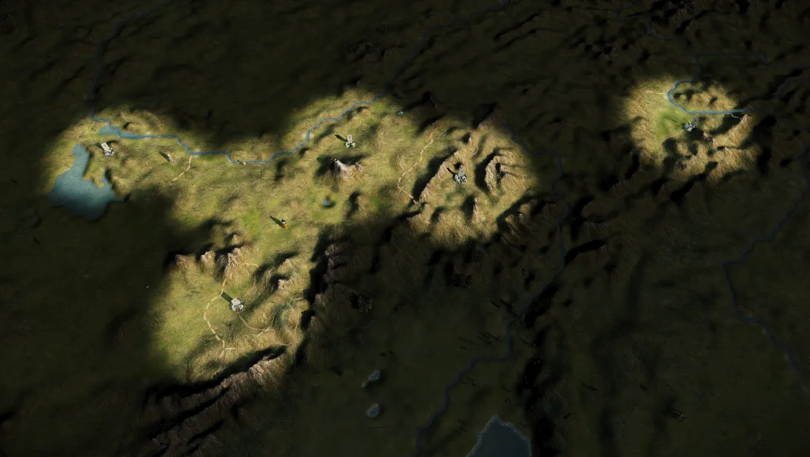
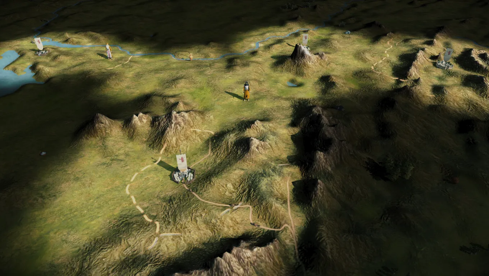
And lastly:
ATROPATENE
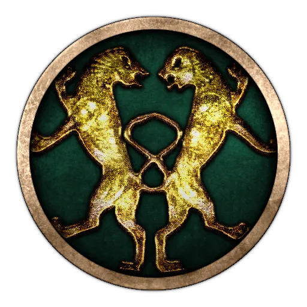
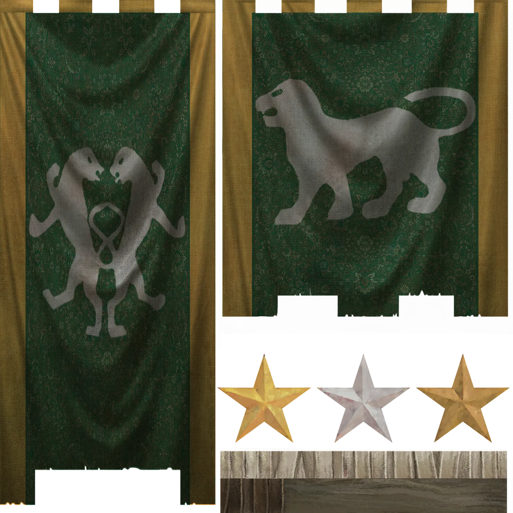
Lastly, the small, secluded, mountainous kingdom of Atropatene is a remnant of the old in a new age. The ancient fires of Ahura Mazda still burning in the temples, Atropatene seeks to preserve the legacy of the Medes and the old ways, shielding itself from the Greek usurpers.
Atropates, the ever loyal, secured this small part of Media for himself and the dynasty now continues to proudly resist. Playing as Atropatene, you will find your expansion options limited. To the south and east, you border on the Seleucid usurpers, while to the north you have a friendly kingdom of Armenia. This is one of the more difficult factions to play as, but if you remain true to their legacy a very rewarding one indeed!
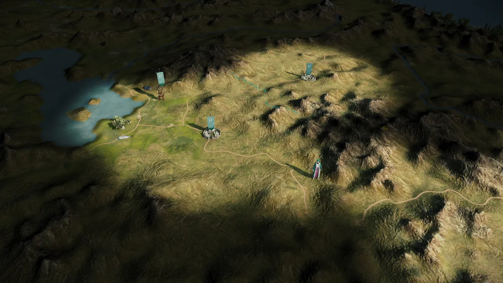
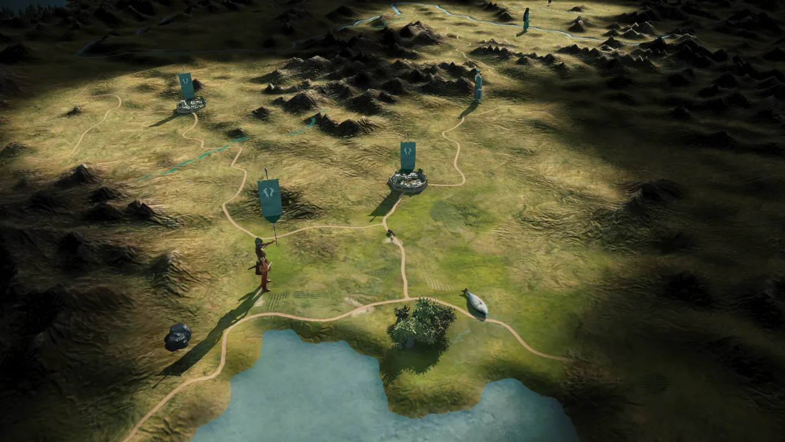
There you have it! This DD is a smaller one (compared to our usual ones) because more work will go into making these factions unique in the future. For now, these factions will all have units from old mods, such as RS2 and RTR, while their rosters are still WIP as well.
Our artists' team is doing a fabulous job with the new hellenistic units, but we could still use more help in that department. So if you have any experience whatsoever with programs like Gimp, Blender, Photoshop or similar, or you have an artistic eye, please do apply in our a channel channel.
We also accept those who do not have such experience, but are willing to learn, so don't worry - our Artists' team is a good bunch and they will teach you everything you need to know to start working on such units as you can see above! If you still have doubts, check the DD that our own @Grimbold posted a while ago (or talk to him directly!) to see how he has improved in the last couple of months!
Thank you and see you shortly for our next Dev Diary!